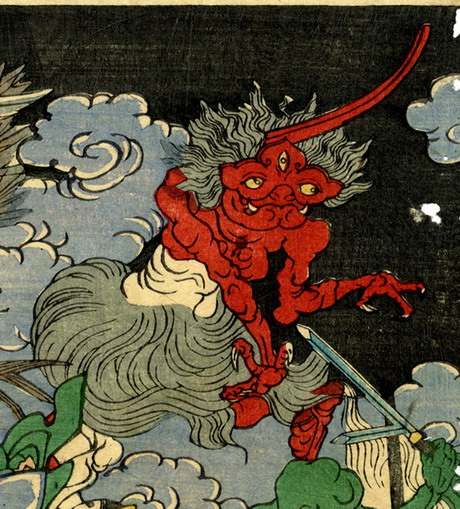

如意が擬人化した化物。三つ目で、取っ手部分が角のようになっている。全身が赤く、腰簑をつけている。手の指は3本で、鋭い爪が生えている。
著作者：一魁斎芳年／出典：親書誌：U426_nichibunken_0224：百器夜行；ヒャッキヤギョウ／日付：2010／資源識別子：U426_nichibunken_0224_0006_0000
Copyright (c)2010- International Research Center for Japanese Studies, Kyoto, Japan. All rights reserved.